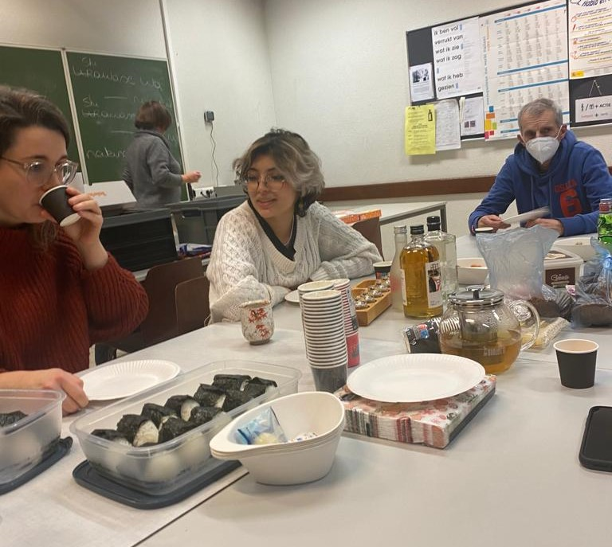
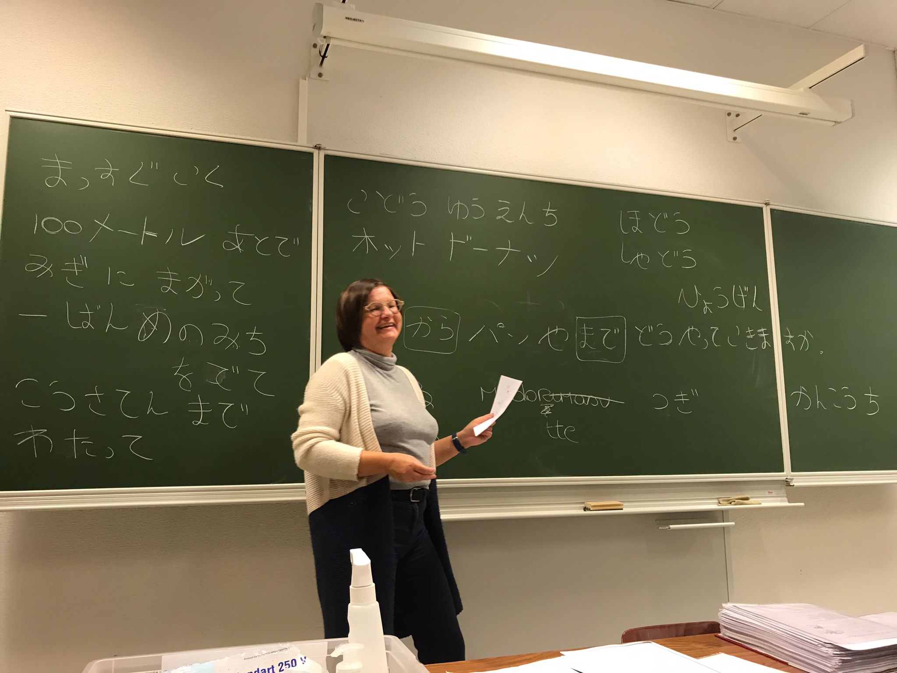

Als deelnemer aan de Japanse taalcursus bij PCVO was mijn hoofddoel het verbeteren van mijn linguïstische vaardigheden en het verdiepen van mijn begrip in de Japanse cultuur. Mijn persoonlijke doelstelling was om consistentie en inzet te tonen, wat resulteerde in het behalen van mijn certificaat en het openen van nieuwe mogelijkheden voor persoonlijke en professionele groei, terwijl ik effectieve interculturele communicatie en respectvolle relaties ontwikkelde.
Tijdens mijn twee jaar durende Japanse taalcursus bij PCVO heb ik een opmerkelijke reis door de taal en cultuur van Japan gemaakt. Deze ervaring heeft niet alleen mijn linguïstische vaardigheden verbeterd, maar heeft ook mijn begrip van de Japanse tradities en levensstijl verbreed.
Na de les aan de PXL bleef ik even wachten tot de avondles Japans begon. Dit was een rustig moment waarop ik mezelf kon voorbereiden, soms door een snelle hap te eten en mijn taken te maken voor de Japanse les. Thuis was het vaak moeilijk om hier tijd voor te vinden vanwege de vele opdrachten voor mijn studie aan de PXL.
De toewijding om al mijn taken tijdig af te ronden, was altijd sterk aanwezig. Ik realiseerde me dat consistentie en inzet cruciaal waren voor mijn vooruitgang in de Japanse cursus.
Een typische les begon met het beantwoorden van een dagelijkse vraag in het Japans. Vervolgens gingen we verder met de kern van de les. We maakten aantekeningen, lazen in ons handboek, luisterden naar Japans en deden gezamenlijk oefeningen om onze vaardigheden te verbeteren. Aan het einde van elke les werden nieuwe Japanse karakters of Chinese tekens geïntroduceerd, die essentieel zijn voor het begrijpen van de Japanse taal.
Op speciale dagen, zoals Japanse of westerse feestdagen, besteedden we daar ook aandacht aan en genoten we van een moment van samenzijn en lekker eten. Zo hebben we in het eerste jaar een kerstfeestje gehouden. Hier leerden we over Japanse kerst en nieuwjaar. En ontdekten we dat Kerst eerder iets is om te vieren onder de vrienden en nieuwjaar met de familie. Ook werd er door KFC een succesvolle campagne is uitgevoerd die vertelde dat hun KFC chicken hetzelfde is als kalkoen in de USA. Dit staat in schril contrast met de gewoonten die er zijn tijdens nieuwjaar en waarbij alle rituelen moeten zorgen voor een goed nieuw jaar.
Gedurende het jaar werkten we aan verschillende taken, die ons begrip van de taal verdiepten. Dit omvatte lees-, luister- en schrijfvaardigheidstests die ons uitdaagden om onze vaardigheden te demonstreren en te verbeteren. Aan het einde van het jaar moesten we een mondeling examen afleggen, wat altijd een stressvolle en spannende uitdaging was. Deze bestond uit een reeks oefeningen waarover we op zeer minimaal gebriefd werden.
Het behalen van mijn certificaat aan het einde van de cursus was een belangrijk doel voor mij. Het symboliseerde niet alleen mijn toewijding aan het leren van de Japanse taal, maar opende ook nieuwe mogelijkheden naar persoonlijke groei en professionele ontwikkeling.
Tijdens deze cursus leerde ik niet alleen over de taal, maar ook over de diepgewortelde cultuur van Japan. Het was fascinerend om betekenis achter de complexe karakters te ontdekken en om meer te begrijpen van de rijke tradities die de Japanse samenleving zo uniek maken. Het leren van de taal was soms een uitdaging, vooral bij het onthouden van nieuwe karakters en het correct uitspreken van woorden. Gelukkig hielpen de interactieve lessen en de toegewijde ondersteuning van de docenten enorm bij mijn vooruitgang.
Reflectie
Tijdens beide jaren van mijn studie heb ik mijn certificaat behaald, hoewel ik vooral in 2022 de nodige uitdagingen heb ondervonden. Dat jaar was bijzonder druk in vergelijking met andere, waardoor ik helaas af en toe de lessen niet kon bijwonen. Desondanks stond mijn doel om mijn diploma te behalen altijd voorop. Daarom vroeg ik regelmatig aan medestudenten wat er in de lessen was behandeld, zodat ik toch de inhoud van alle lessen kon studeren.
De studie heeft mijn kennis over Japan aanzienlijk vergroot. We concentreerden ons vooral op de taal, grammatica en vocabulaire, maar bij gelegenheid namen we ook de tijd om meer te leren over de Japanse cultuur. Dit aspect vond ik bijzonder boeiend. Vooral het spreken bleek een uitdaging voor me.
Ondanks deze obstakels kan ik vandaag de dag nog steeds films in het Japans bekijken en kan ik de grote lijnen begrijpen. Mijn kennis van Japans is aanzienlijk toegenomen. Wanneer je dieper in deze taal duikt, kom je automatisch bij de cultuur terecht. Dit is van groot belang om een goede indruk te maken en respect te tonen. Het is altijd prettig wanneer mensen rekening houden met jouw achtergrond en gewoonten, wat uiteindelijk leidt tot betere communicatie en relaties, met name met klanten.
Een diepgaand begrip van een taal en de bijbehorende cultuur is essentieel voor een effectieve interculturele communicatie. Door respectvol om te gaan met elkaars achtergronden en gebruiken, ontstaat er een basis voor een vruchtbare samenwerking en begrip. Dit streven naar culturele gevoeligheid draagt bij aan het creëren van een inclusieve en respectvolle omgeving, wat van onschatbare waarde is in zowel professionele als persoonlijke interacties.